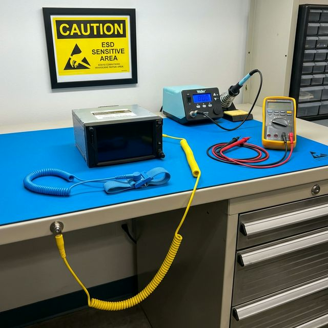

Learn to recognize ESD-sensitive avionics components and master the workstation practices that prevent invisible, catastrophic damage.
After completing this module, you will be able to:
Every time you walk across a carpeted floor and touch a doorknob, you experience Electrostatic Discharge (ESD)Electrostatic DischargeA sudden, rapid transfer of static charge between two objects at different electrical potentials. The discharge occurs in nanoseconds and can reach tens of thousands of volts. In electronics, even small ESD events can permanently damage semiconductor junctions. — a rapid, uncontrolled equalization of electrical charge between two objects at different potentials. That familiar "zap" you feel is typically between 2,000 and 4,000 volts.
How does static charge build up? The primary mechanism is called triboelectric chargingTriboelectric ChargingThe generation of static electricity through friction between two dissimilar materials. When materials contact and separate, electrons transfer from one surface to the other, leaving one positively charged and the other negatively charged. Common culprits: synthetic clothing, Styrofoam, and plastic bags.. When two dissimilar materials rub together — such as your shoes on carpet, or your synthetic shirt against a chair back — electrons transfer from one surface to the other. One material becomes positively charged, the other negatively. This charge imbalance is what we call "static electricity." The charge accumulates on your body until it finds a conductive path to equalize — such as a metal doorknob, or the exposed pins of an avionics circuit board.
Here's the critical problem for avionics technicians: the human body cannot perceive a discharge below approximately 3,500 volts. You won't see a spark, hear a pop, or feel anything. But modern CMOSComplementary Metal-Oxide-SemiconductorThe dominant semiconductor technology used in modern digital ICs including microprocessors, memory, and logic gates. CMOS devices use extremely thin gate oxide layers (measured in nanometers) that are highly vulnerable to voltage spikes. The thinner the oxide, the lower the voltage needed to cause permanent breakdown. integrated circuits — the type used in nearly every digital avionics LRULine Replaceable UnitA modular avionics component designed for quick removal and replacement on the flight line. Examples include GPS receivers, transponders, radio transceivers, and flight management computers. LRUs contain ESD-sensitive circuit boards and must be handled with full ESD precautions whenever removed from their protective rack or enclosure. — can be permanently destroyed by as little as 100 volts. Some advanced components fail at as low as 20–30 volts. That means you can fatally damage a $15,000 navigation computer with a discharge you will never see, hear, or feel.
What actually happens inside the chip? A CMOS transistor's switching element is separated from its control electrode by an incredibly thin layer of silicon dioxide — the gate oxideGate Oxide LayerAn ultrathin insulating layer of silicon dioxide (SiO₂) between the gate electrode and the channel of a MOSFET transistor. In modern ICs, this layer can be as thin as 1–5 nanometers. It controls whether current flows through the transistor. ESD voltage punches through this layer, creating a permanent conductive path that shorts the gate — the transistor can no longer switch on and off correctly.. In modern processors, this layer is only a few nanometers thick — thousands of times thinner than a human hair. When an ESD event sends a voltage spike through this layer, it can punch a microscopic hole through the oxide, creating a permanent short circuit. The transistor can no longer switch states correctly, and the integrated circuit is destroyed.
Not all ESD damage causes immediate, detectable failure. A discharge can weaken the gate oxide without fully puncturing it — this is called latent damage. The weakened oxide develops microscopic stress fractures but still functions. The component passes all bench tests and is returned to service. But the degraded oxide layer is now vulnerable to thermal stress, vibration, and voltage transients. Weeks or months later — often during a hot ramp day or in-flight thermal cycling — the weakened junction finally breaks down and the unit fails. This is why the avionics industry treats ESD prevention as an airworthiness issue, not merely a cost-savings measure.
An ESD-protected workstation is a controlled environment where all conductive surfaces, tools, and the technician's body are maintained at the same electrical potential — a concept called equipotential bondingEquipotential BondingThe practice of electrically connecting all conductive objects in a workspace to the same ground reference, so no voltage difference exists between them. If everything is at the same potential, charge cannot flow between objects — and charge flow is what causes ESD damage. This is the fundamental principle behind every piece of ESD protection equipment.. The goal is not to eliminate static — that's physically impossible in a working environment. The goal is to ensure there is never a voltage difference between the technician, the workstation surface, and the component being handled. If everything is at the same potential, charge cannot flow — and without charge flow, there is no discharge event.
This is achieved by connecting all protective elements — the dissipative matStatic-Dissipative MaterialA material with a surface resistivity between 10⁵ and 10¹² ohms per square. Unlike conductive materials (which allow rapid, uncontrolled charge transfer), dissipative materials bleed charge away slowly and safely. This controlled drain rate is critical — it prevents secondary ESD events that could occur if charge moved too quickly between objects., the wrist strap, and the equipment chassis — to a single common ground point (CGP)Common Ground PointA dedicated connection point where all ESD protection elements converge. The CGP is typically a banana jack or stud bonded to the building's electrical safety ground (earth ground). By routing all ground paths through a single point, you eliminate ground loops and ensure true equipotential bonding across the entire workstation.. Each element in the system has a specific function. Click below to learn how each one works.

The mat is made of a static-dissipative material (typically vinyl with carbon loading) that drains static charge slowly to the grounding point. It has a surface resistance of approximately 10⁶ to 10⁹ ohms — high enough to limit current (so it doesn't create a shock hazard near energized equipment), but low enough to bleed off static charge in milliseconds. The mat covers the entire work surface and connects to the common ground point via a snap-on cord.
The wrist strap is the single most important piece of ESD protection equipment. It maintains a continuous electrical bond between the technician's skin and the grounding point. A 1-megohm resistor is built into the coiled cord — this limits current to safe levels (if you accidentally contact a live circuit, the resistor prevents shock) while still allowing static to drain within a fraction of a second. The strap must make firm, direct skin contact — wearing it over a sleeve defeats its purpose entirely.
All ESD protection elements — the mat cord, the wrist strap cord, and optionally, the equipment chassis — connect to a single common ground point (CGP). This ensures everything is at the same potential. The CGP is typically bonded to the building's electrical safety ground. Never use a water pipe or random metal object as your ESD ground — it must be a verified, dedicated earth ground connection.
ESD-sensitive components must be stored and transported in anti-static (pink poly) or static-shielding (silver metallic) bags. Anti-static bags prevent triboelectric charging (charge buildup from friction). Static-shielding bags go further — they contain a conductive outer layer that acts as a Faraday cageFaraday CageA conductive enclosure that blocks external electric fields from reaching the interior. Named after physicist Michael Faraday, the cage works because the external charge distributes itself on the outer surface, canceling out inside. In ESD bags, the metallic outer layer serves this function — external static fields cannot penetrate to the component sealed inside., blocking external fields. Never place an ESD-sensitive board on top of a bag — the bag only protects what's inside it. The outside of a shielding bag is conductive and can actually transfer charge to a component resting on it.
Before reviewing the practice rules, it helps to understand how much static your daily environment actually generates. The table below — adapted from ESD Association (ESDA) and military standards — shows typical voltages generated by common actions under different humidity conditions.
| Activity | Low Humidity (10-20% RH) | High Humidity (65-90% RH) |
|---|---|---|
| Walking across carpet | 35,000V | 1,500V |
| Walking across vinyl floor | 12,000V | 250V |
| Picking up a poly bag from bench | 20,000V | 1,200V |
| Sitting or shifting in a chair | 18,000V | 1,500V |
| Removing a component from pink poly bag | 6,000V | 600V |
Even high-humidity values exceed the 100V threshold that destroys sensitive CMOS. There is no humidity level that makes it safe to skip ESD protection. Humidity helps — but it is never sufficient on its own.
The following table summarizes the critical behaviors that separate safe ESD handling from dangerous shortcuts. Memorize the Don'ts — they represent the most common ways technicians unknowingly destroy components.
| Practice | Status | Why It Matters |
|---|---|---|
| Wear a grounded wrist strap before touching any board | DO | Bonds you to ground, preventing charge buildup |
| Place boards inside a shielding bag when not being worked on | DO | Faraday cage effect blocks external static fields |
| Test your wrist strap at the start of every shift | DO | A broken cord or dirty contact = zero protection |
| Touch a metal door frame to "discharge" yourself | DON'T | Uncontrolled rapid discharge can arc to nearby components |
| Set a board on top of a shielding bag | DON'T | Conductive outer layer can transfer charge TO the board |
| Wear a wrist strap over a long sleeve | DON'T | Fabric insulates skin — the strap must touch bare skin |
| Use Styrofoam cups or packing peanuts near the bench | DON'T | Styrofoam is triboelectric — generates extreme static charge |
Static charge builds up far more easily in low-humidity environments (below 30% RH). In dry, air-conditioned shops or during winter months, the risk increases dramatically. Some Part 145 shops use humidifiers or ionizers to keep relative humidity between 40–60% as an additional layer of ESD protection.
This simulation models the human body as a 100 pF capacitor charged to 4,000V — the standard Human Body Model (HBM)Human Body ModelThe industry-standard ESD test model (ANSI/ESDA/JEDEC JS-001). It represents the human body as a 100 pF capacitor discharged through a 1,500 Ω resistor. The HBM simulates the most common real-world ESD event: a charged person touching a grounded device. Components are rated by their HBM withstand voltage (e.g., Class 1A = 250–500V).. Toggle between scenarios to see how current flows — and why a wrist strap changes everything.
Left: Human body modeled as Cbody = 100 pF at +4,000V, discharged through Rbody = 1,500Ω. Center: CMOS gate oxide as a thin-film capacitor (breakdown ≈ 100V). Right (safe mode): The 1MΩ wrist strap resistor provides a controlled drain path to ground — the gate oxide never sees a dangerous spike.
Let's walk through a realistic avionics shop scenario. You're a bench technician in a 14 CFR Part 145Part 145 Repair StationAn FAA-certificated repair station authorized to perform maintenance, preventive maintenance, and alterations on aircraft, airframes, powerplants, propellers, instruments, and accessories. Part 145 stations must have documented procedures, qualified personnel, and approved quality systems — including ESD protection programs for avionics work. repair station. A customer aircraft (Cessna Citation CJ3+) has come in for an avionics upgrade: replacing the legacy Garmin GNS 530W with a new Garmin GTN 650Xi touchscreen GPS/NAV/COMM navigator. The work order references STC SA02506SE and an approved wiring diagram.
Before you even open the shipping box, verify your ESD mat is connected to the common ground point and the ground monitor shows green. Attach your wrist strap to bare skin and test it — document the test on the shop's daily ESD verification log. The new GTN 650Xi ships in a static-shielding bag inside a foam-padded box. Leave it sealed until you're ready.
At the aircraft, pull the avionics master switch OFF and confirm the NAV/COMM circuit breaker is pulled and collared. Verify zero voltage on the GNS 530W connector using a multimeter before touching any pins. Per the STC instructions, tag the circuit breaker "DO NOT CLOSE — Avionics Modification in Progress."
Attach a portable ESD wrist strap to the aircraft structure (a clean, unpainted ground stud on the instrument panel frame). Release the tray locking mechanism and gently slide the GNS 530W out of its rack. Immediately place it into a static-shielding bag — do not set it on the glareshield, a seat cushion, or the carpet. Seat cushions and carpet are triboelectric generators. Seal the bag and label it with the tail number and date.
Back at the ESD-protected bench, open the shipping box and remove the GTN 650Xi while still wearing your grounded wrist strap. Inspect the rear connector for bent pins or contamination. Carry the unit to the aircraft in its shielding bag. At the aircraft, re-attach your portable wrist strap to the aircraft ground stud, remove the unit from the bag, and slide it into the mounting tray. Do not force the connector — the D-sub pins should engage smoothly. Torque the hold-down screws per the installation manual.
Remove the circuit breaker collar. Push in the avionics master. Power on the GTN 650Xi and verify it enters self-test. Confirm GPS satellite acquisition, VHF COMM transmit/receive on 122.8 MHz, and VOR/ILS receiver lock on a ground-based test set. Compare the displayed database revision to the approved ICA. Log the successful installation in the aircraft maintenance records and sign the 8610-2 return-to-service tag.
Return the removed GNS 530W (still in its shielding bag) to the customer or stock room. File the STC compliance paperwork. Note on the work order that all ESD precautions were followed per shop procedure QP-ESD-001. The aircraft is now ready for a customer acceptance flight and the avionics upgrade is complete.
Notice how many times ESD protection was applied during a single unit swap: wrist strap verification, grounded mat, shielding bag at removal, shielding bag during transport, portable strap at the aircraft, shielding bag again for the new unit. Each of these steps eliminates a potential discharge path. Skip any one of them and you risk destroying a $12,000 navigator with an invisible 200-volt discharge.
Follow this exact procedure every time you remove, handle, or install an avionics Line Replaceable Unit (LRU) containing ESD-sensitive components.
Confirm the mat is connected to the common ground point. Visually inspect the cord for damage. If your shop has a ground monitor, check it shows a green (good) status.
Snap the wrist strap onto bare skin (never over a sleeve). Plug the cord into the CGP. Use a wrist strap tester to verify continuity and proper 1MΩ resistance. If the tester fails, replace the strap before proceeding.
Have a properly sized static-shielding bag (silver/metallic) open and ready on the mat. If replacing a unit, you'll transfer the removed LRU directly into this bag.
Disconnect power to the system first. Gently extract the unit, holding it by the chassis or non-sensitive edges. Never touch exposed pins, connectors, or bare circuit board traces.
Immediately place the removed unit inside the shielding bag and seal it. Never carry an unbagged board across the shop — even a short walk can generate thousands of volts through triboelectric charging on your clothing.
When you need to inspect or test the unit, remove it from the bag and place it directly on the grounded anti-static mat. Never set it on a regular desk, cardboard box, or paper surface — all of which are insulative and will hold charge.
Once work is finished, return the LRU to its shielding bag before transporting it back to the aircraft. Log any ESD-sensitive handling in the work order per your shop's quality system.
A sudden, rapid transfer of static charge between two objects at different electrical potentials. In avionics, it occurs when an improperly grounded technician touches an ESD-sensitive component, causing current to flow through delicate semiconductor junctions.
A conductive band worn on bare skin, connected via a coiled cord with a built-in 1-megohm resistor to the common ground point. The resistor limits current to prevent shock if the technician accidentally contacts an energized circuit, while still allowing static charge to drain safely.
Component damage caused by ESD that is severe enough to weaken internal structures (such as gate oxide layers in MOSFET transistors) but not severe enough to cause immediate failure. The component passes functional tests on the bench, is returned to service, but fails prematurely in the field — often under thermal or vibration stress.
A metallic-silver anti-static bag with a conductive outer layer that acts as a Faraday cage, blocking external electric fields from reaching the enclosed component. The inner layer is anti-static to prevent triboelectric charge generation inside the bag. Only provides protection when the component is inside the sealed bag.
Answer the following scenario-based questions to verify you can apply what you've learned.